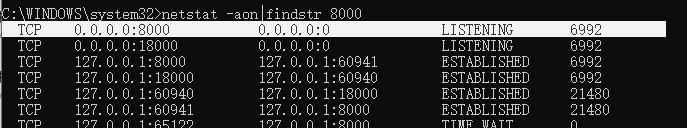

cmd命令查看本机的端口占用情况
简短步骤：
1.打开cmd命令提示符，输入netstat -ano，可以看到当前本机的所有端口情况
2.输入netstat -aon|findstr，加端口号，记住进程pid
3.tasklist|findstr,加刚才记住的pid，可以查到该端口是哪个应用占用的
1.打开cmd命令提示符，输入netstat -ano，可以看到当前本机的端口情况，并找到占用的端口
（1）地址一栏相关说明：
0.0.0.0 是对外开放，通过服务域名、ip可以访问的端口
127.0.0.1 只能对本机 localhost访问，也是保护此端口安全性
(2)状态信息一栏相关说明：
LISTENING 服务启动处于监听状态
ESTABLISHED 建立连接。表示两台机器正在通信
CLOSE_WAIT 对方主动关闭
TIME_WAIT 我方主动关闭
2、继续输入netstat -aon|findstr，加端口号，记住进程pid

3.tasklist|findstr,加刚才记住的pid
可以查询到当前占用这个端口的是那个应用

所有步骤的图示和输出结果：